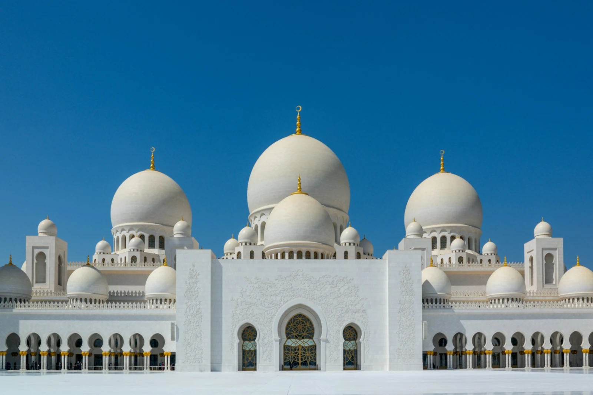

About the masjid
A house of Allah in Hoppers Crossing, serving the Muslims of Melbourne’s west since 2006 — and named in honour of Maryam (peace be upon her), whom Allah honoured in the Qur’an.
Photo: Nick Fewings / Unsplash
Get to know us
Our name, our people, our story
Why “Virgin Mary”?
Maryam (peace be upon her) is the only woman named in the Qur’an, and its nineteenth surah carries her name. Why our masjid does too.
Read more → Our peopleOur team
The imam, staff and volunteers who lead prayer, teach, and serve the congregation.
Meet the team → Our journeyOur history
Serving Hoppers Crossing and the City of Wyndham since 2006.
Read our story →Who we are
A house of Allah, first and always.
Masjid Maryam exists to serve the Muslim community of Melbourne’s west in the five daily prayers, Jumu’ah, the two Eids, and all the life-events in between — from the adhan whispered in a newborn’s ear to the janazah prayer that accompanies us home. A dedicated women’s prayer section is part of the masjid.
And our doors are open. If you are not Muslim and want to see inside a mosque, ask a question about Islam, or arrange a school or community group visit, you are warmly welcome — start with our visitors & questions page.
Curious about Islam? Our da’wah partner IntroToIslam offers free, self-paced online courses — and weekly classes in person and on Zoom.
Join us
Pray with us this Friday.
Jumu’ah is held three times every Friday — 12:15 PM, 1:15 PM and 2:15 PM — with khutbahs in Arabic and English, at 143 Hogans Rd, Hoppers Crossing.